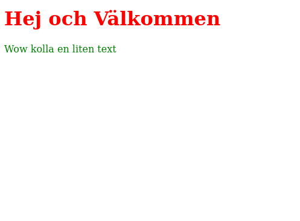

Intro
Nu är det dags att skapa den första hemsidan. Steg 1 är att öppna VSCode.
När ni har den uppe så kan ni högerklicka på kolumnen på vänstra sidan och välja New Folder och namnge den Första Hemsidan. Sedan kan ni högerklicka på mappen och välja New File och namnge filen index.html, gör det engång till och skapa filen style.css. Filmen nedan visar även hur man gör det.
Nu är ett äntligen dags att börja skriva kod!
I index.html så kan ni börja med att skriva:
<!DOCTYPE html>
<html>
<head>
<title>Titel</title>
</head>
<body>
<h1>Hej och Välkommen</h1>
<p>Wow kolla en liten text</p>
</body>
</html>
Efter ni har gjort det så kan ni spara genom att trycka ctrl + s och sedan högerklicka på index.html filen och välja Open With Live Server, då borde en hemsidan öppnas i er webbläsare
Live server är ett väldigt smidigt tillägg för när man ändrar koden så uppdateras hemsidan automatiskt.
CSS
Nu är det dags att börja skriva CSS kod. MEN för att det ska fungera så måste man först länka filerna så webbläsaren vet att den ska använda style.css. Det gör man genom att lägga till en link tagg i head som ser ut såhär:
<link rel="stylesheet" href="style.css">
Efter ni har gjort det så ska er head se ut såhär:
<head>
<title>Titel</title>
<link rel="stylesheet" href="style.css">
</head>
Nu kan vi börja skriva lite CSS kod. Vi skriver lite kod i style.css som gör titeltexten röd och brödtexten grön.
h1 {
color: red;
}
p {
color: green;
}
Nu borde er hemsida se ut såhär:
